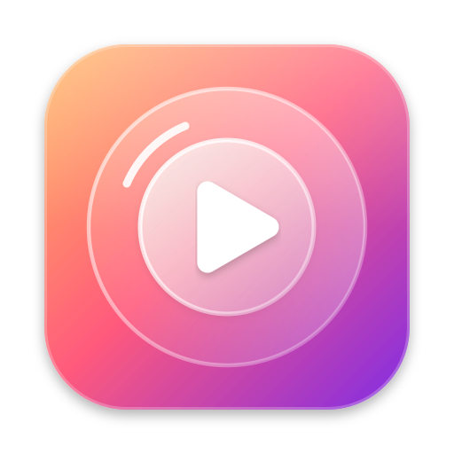

GlassTube
YouTube and YouTube Music, as a real Mac app.
Download for MacSigned and notarized by Apple. Updates arrive inside the app.
Native, not a web page
Real Mac windows, menus and shortcuts, with Picture in Picture, AirPlay and media keys.
YouTube Music built in
Albums, artists, song radio and lyrics. Switch with ⌘1 and ⌘2.
No account needed
Search, watch, Shorts and music work signed out. Sign in for your own feed and playlists.
Keeps your place
Videos resume where you stopped. Watch Later, Favorites and History live on your Mac.
Install
- Download and open GlassTube.dmg.
- Drag GlassTube to Applications.
- Open it from Applications. macOS asks once whether to open an app from the internet: choose Open.
After that, updates come through GlassTube ▸ Check for Updates… (and a daily check).
Good to know
- Songs from YouTube Music play through YouTube Music's own player inside the app. Signed out, that includes its ads. Signed in, songs play as your account.
- If macOS asks whether GlassTube may use its saved sign-in, choose Always Allow.
- GlassTube is unofficial. YouTube changes things without notice; when a video won't play natively, the app falls back to YouTube's own player and says so.
Found something?
Use Help ▸ Send Feedback… in the app. No account needed, and you see exactly what's sent before it goes.